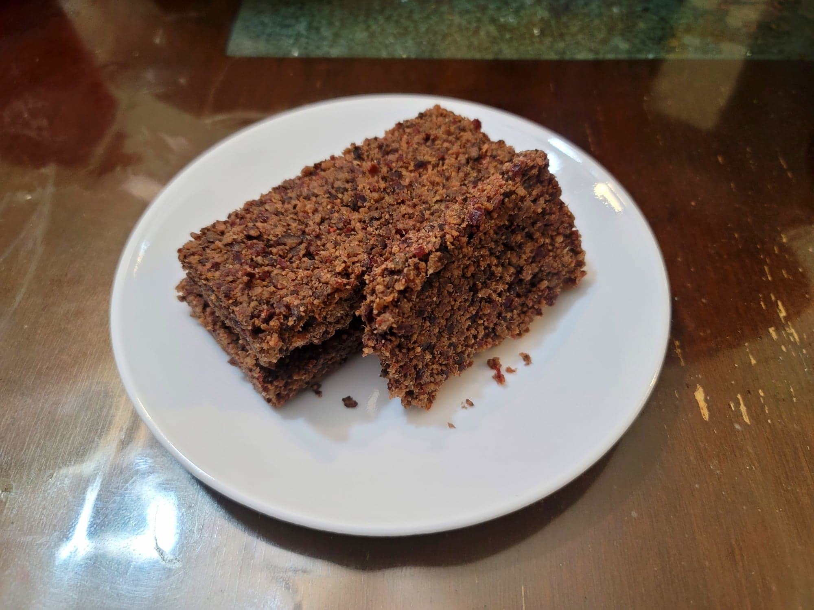

Bison Wasna (Pemmican)

Ingredients:
- 2 lb Lean bison such as flank, rump, or round, fat trimmed off and sliced thinly against the grain
- 1/2 cup Dried berries, preferably Dried cranberries
- Optional: 1-2 tsp Crushed dried juniper berries, or to taste
- 1/8 tsp Smoked salt, or to taste
- Bison tallow or Beef tallow, as needed, melted
Instructions:
- Place the bison into a dehydrator. Let dehydrate completely, at least 4 hours to overnight depending on the thickness of the cuts.
- Once completely dry, place into a food processor. Process into a coarse or fine powder to preference. Then add the berries and process to a powder as well. Add seasonings to taste. Then add just enough fat/tallow to act as a glue to hold the pemmican together. Form into bars, patties, or any desired shape.
- Either store or serve immediately. If dried properly, will last years unrefrigerated.